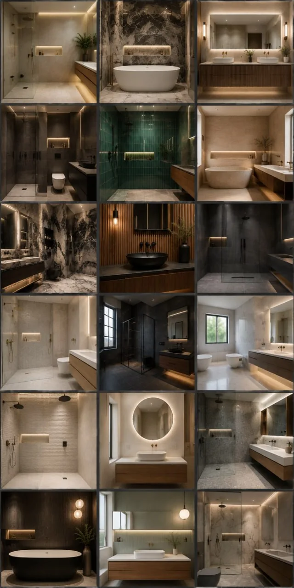

New website foundation
Original presentation built around the confirmed business identity and category.
PRIVATE DIGITAL-PRESENCE PREVIEW · LONDON
A visual-first home for approved bathroom fitting information, AI-illustrative design directions and a visitor-help assistant. Built from limited public identity details for owner review — not a live W & W Builders Limited website.
No booking, callback, email, payment, CRM update or notification is sent by this preview.

THE PROPOSED CHANGE
Original presentation built around the confirmed business identity and category.
Answers are limited to approved business information. Unknown commercial details are not guessed.
Any contact, callback, booking or notification workflow remains off until separately approved.
WHAT IS CONFIRMED FOR THIS PREVIEW
Only the supplied category and public recognition details are used. Exact services, areas, pricing, hours, availability and team details require owner review before publication.
BUSINESS RECOGNITION DETAILS · SOURCE WORKBOOK
Shown for owner recognition only. This private preview does not contact this route or collect visitor submissions.